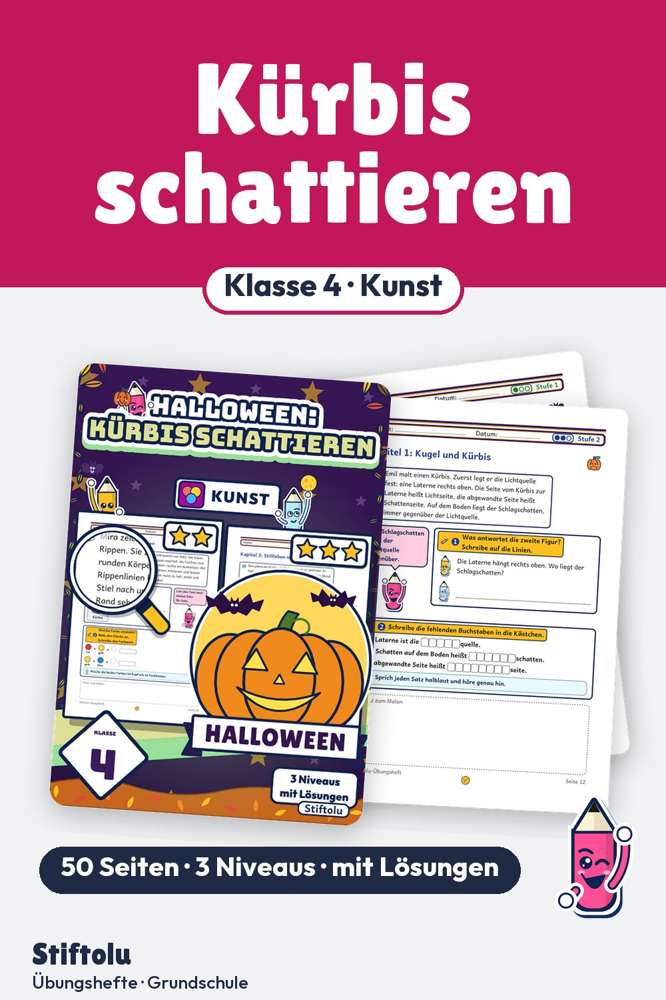

Werbung · Übungsheft von Stiftolu
Halloween Kunst in Klasse 4: Kürbis schattieren und Schlagschatten zeichnen

Von der Kugel zum Kürbis mit Rippen und weiter zum Stillleben mit Licht: Viertklässler üben, Körper räumlich zu zeichnen, eine Lichtquelle festzulegen und den Schlagschatten anzulegen. Zu Halloween ein passendes Kunstheft mit 50 Seiten, drei Niveaus und Lösungen, erhältlich auf eduki.